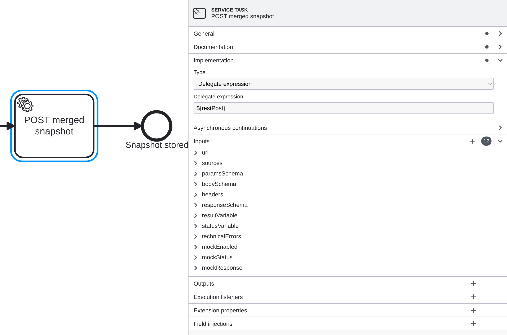
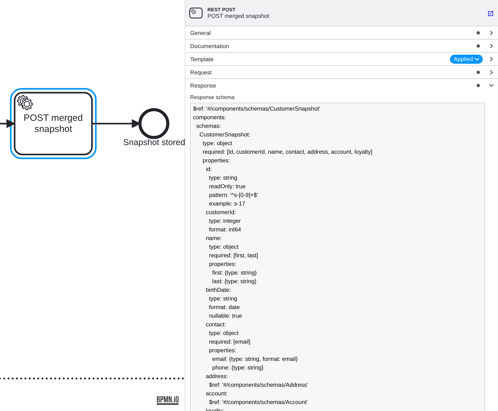
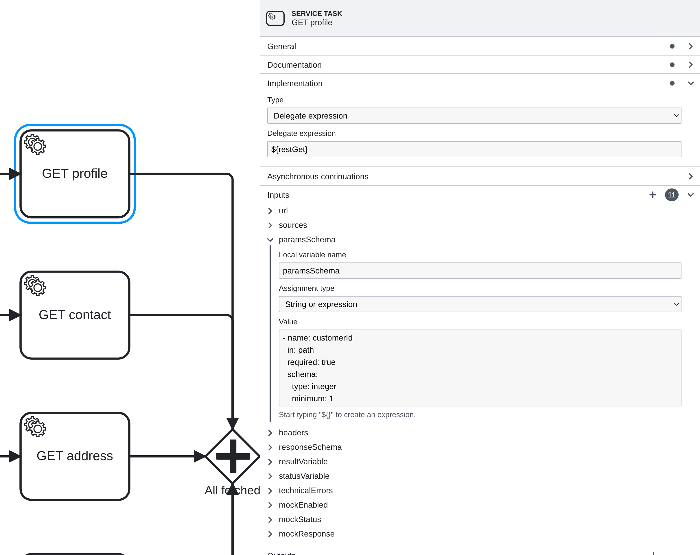
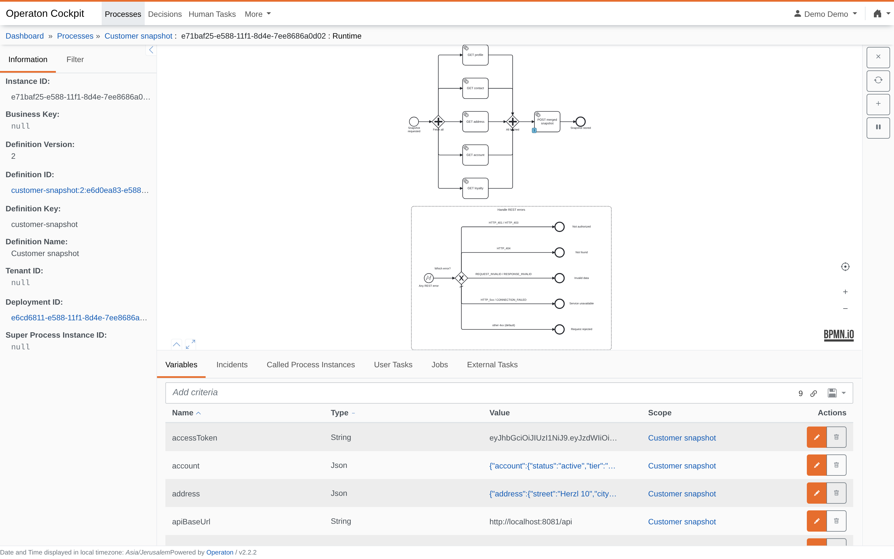
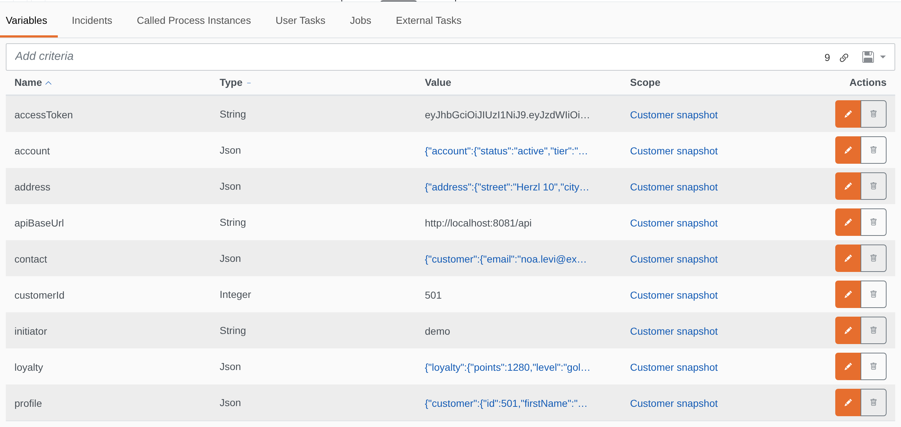
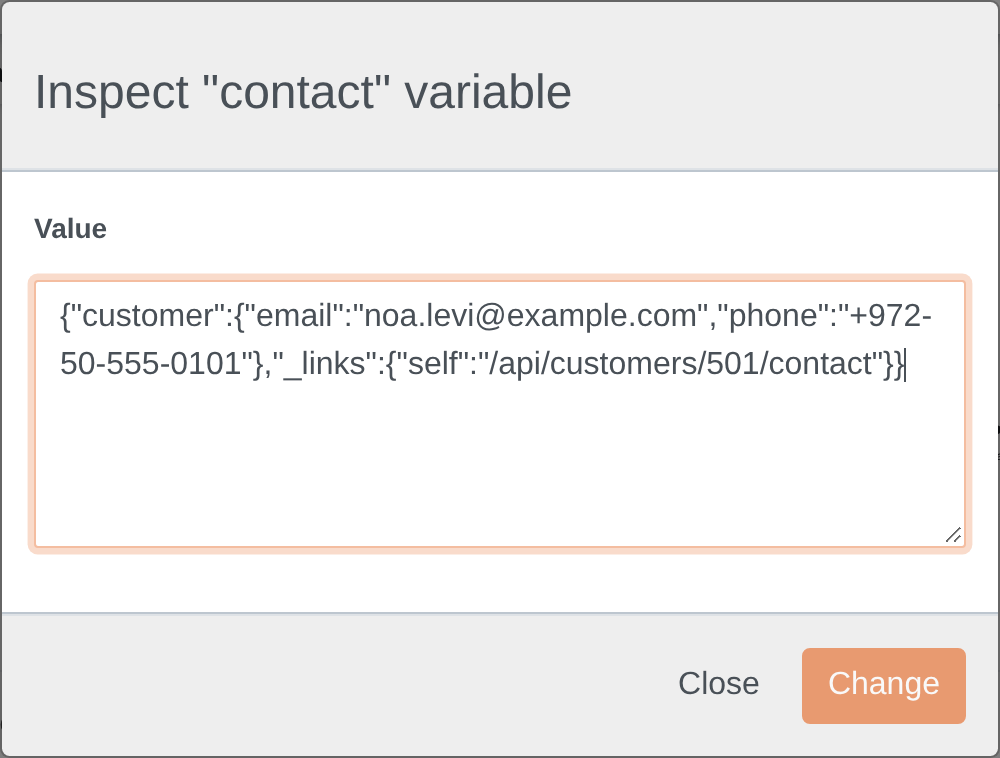
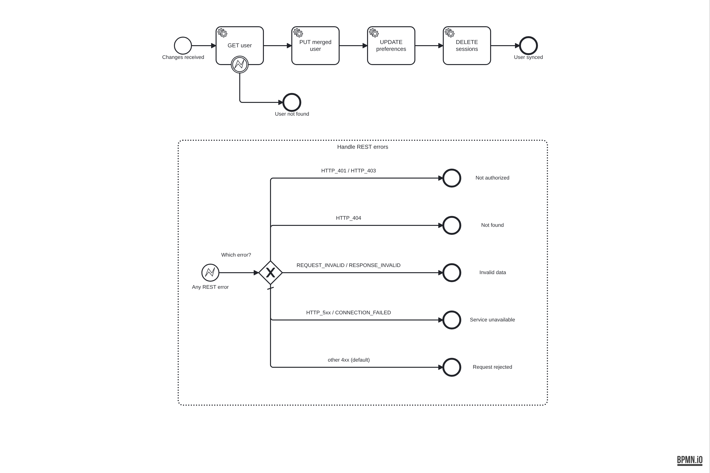
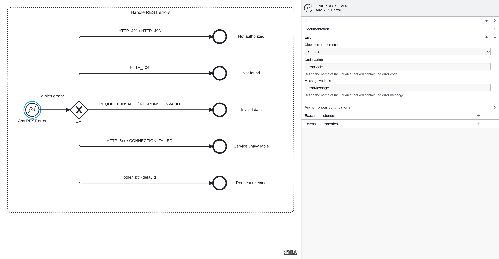
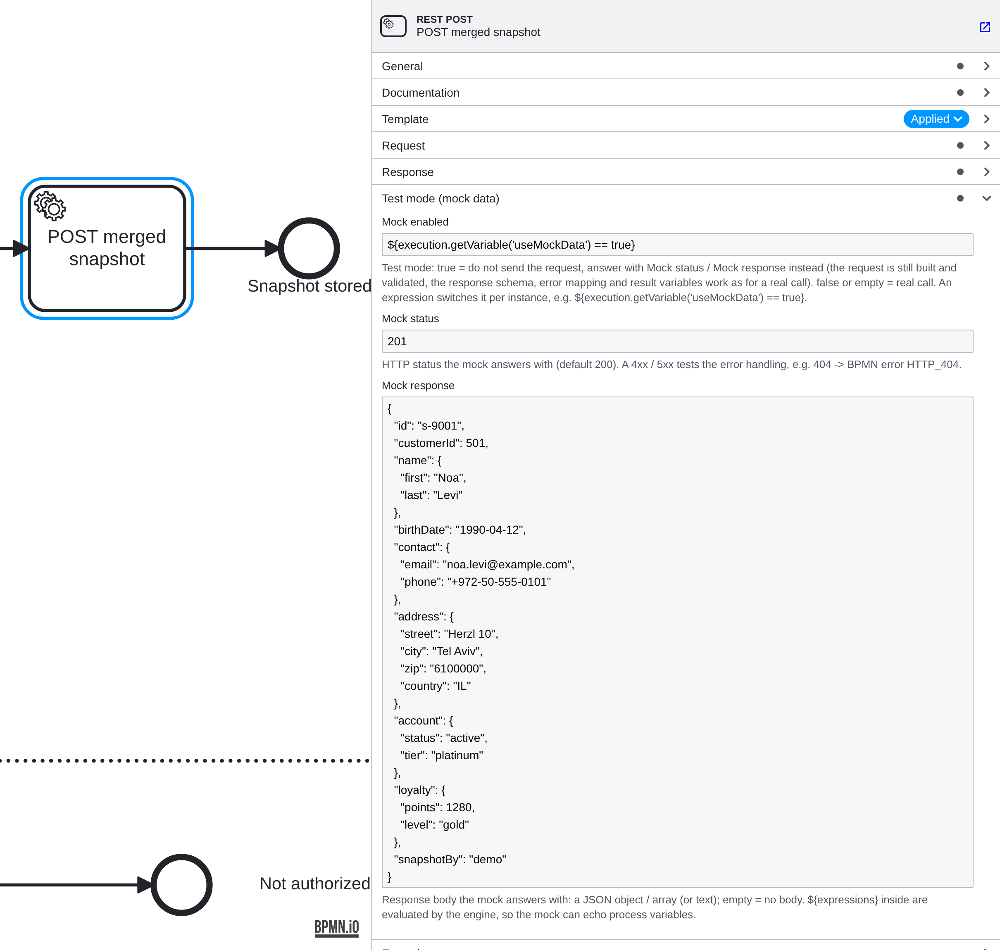

OPERATON · SPRING BOOT · CAMUNDA 7 MODELS
One service task per HTTP action. The request is built from process variables by the schema you paste from the service’s OpenAPI – no HTTP code in the model.
restGet · restPut · restUpdate · restPost · restDelete
THE IDEA
The model says which data to send. The connector does the HTTP.
You give a URL, the variables to use and the schema copied from the target service’s OpenAPI / Swagger. Merging, shaping, validation, the call, errors and storing the result are handled for you.
HOW IT WORKS
01
Read sources
Variables named in sources, or JSON literals
02
Deep-merge
In order; later wins, arrays are replaced
03
Shape by schema
Pick, rename, default, coerce; only declared fields
04
Validate
In the OpenAPI dialect; a bad request is never sent
05
HTTP call
Path, query, headers, Bearer token, body; or the mock answer
06
Store result
Optional response schema, then JSON into a variable
Steps 03–04 run twice when both are set: paramsSchema builds the URL params and headers, bodySchema builds the body. In test mode step 05 sends nothing.
THE CONNECTORS
| Delegate expression | HTTP | Body by default | Typical use |
|---|---|---|---|
| ${restGet} | GET | no | read data |
| ${restPut} | PUT | yes | replace a resource |
| ${restUpdate} | PATCH | yes | partial update |
| ${restPost} | POST | yes | create / submit |
| ${restDelete} | DELETE | no | remove |
All five take the same inputs. Set on a Service Task: Implementation → Delegate expression. “Body by default” means: with no bodySchema, the merged sources are sent as they are.
INPUT VARIABLES · THE REQUEST
| Input | What it does | Example |
|---|---|---|
| url | Required. {name} placeholders are filled from path params | ${apiBaseUrl}/users/{userId} |
| sources | Variable names (or JSON literals), deep-merged in this order | currentUser, userChanges |
| paramsSchema | The operation’s OpenAPI parameters, pasted → path, query, header | - name: customerId in: path |
| bodySchema | The request schema pasted from OpenAPI / Swagger → builds and validates the body | $ref: '#/components/…' |
| headers | Static headers as a JSON object; values may use expressions | {"X-Correlation-Id": "${…}"} |
| mockEnabled mockStatus mockResponse | Test mode: answer with mock data instead of calling the service | ${execution.getVariable( 'useMockData') == true} |
No token input: the connector sends the accessToken execution variable. Schemas are pasted as JSON or YAML, without comments, and must not contain ${…}; use x-expression instead.
OUTPUT VARIABLES · THE RESPONSE
resultVariable
Receives the response body as a Json variable. Read a field with ${snapshot.prop("id").stringValue()}, or use it as a source of a later task.
statusVariable
Receives the HTTP status code, e.g. 201.
responseSchema
Optional, pasted from OpenAPI. Keeps only declared fields (no writeOnly ones) and validates before storing.
WHEN SOMETHING GOES WRONG
| Situation | Result |
|---|---|
| Request breaks its schema | BpmnError REQUEST_INVALID |
| Response breaks its schema | BpmnError RESPONSE_INVALID |
| HTTP 4xx (401, 404 …) | BpmnError HTTP_404 … |
| HTTP 5xx, timeout, I/O | Exception (incident / retry), or HTTP_5xx / CONNECTION_FAILED with technicalErrors = bpmnError |
| Missing source variable, malformed token, bad input | Exception → incident |
Catch a BpmnError with an error boundary event on the task, e.g. HTTP_404 → “User not found”.
EXAMPLE 1 · PUT /users/1042
currentUser (GET result)
{"user": {
"id": 1042,
"name": "Maya Lin",
"contact": {
"email": "maya.lin@…",
"phone": "+1-555-0192"},
"preferences": {
"theme": "light",
"notifications": {
"email": true,
"sms": false}}}}
userChanges (start var)
{"user": {
"contact": {
"phone": "+1-555-0148"},
"preferences": {
"theme": "dark",
"notifications": {
"sms": true,
"push": true}},
"roles": ["editor",
"reviewer"]}}
→ request body
{"user": {
"id": 1042,
"name": "Maya Lin",
"contact": {
"email": "maya.lin@…",
"phone": "+1-555-0148"},
"preferences": {
"theme": "dark",
"notifications": {"email":
true, "sms": true,
"push": true}},
"roles": [ … ]}}
sources = currentUser, userChanges · later source wins · the “merged user” schema keeps only known fields, coerces types and checks required ones.
SCHEMA KEYWORDS
same name
A property takes the value with the same name from the merged sources; a parameter falls back to the process variable of that name.
x-source
JSON pointer to take it from elsewhere: "/customer/firstName" → name.first
x-expression
An engine expression without ${ }: "initiator", "execution.processInstanceId"
in · x-in
Where a param goes: path, query (default) or header. Pasted OpenAPI parameters already say it.
x-flatten
Flatten nested input first: address.city → city; later source wins
declared only
Undeclared fields are dropped (additionalProperties: true keeps them); readOnly fields stay out of requests.
After shaping, scalars are coerced to the schema type ("1534.50" → 1534.5), default / const fill gaps, and the result is validated against the same schema.
SCHEMAS FROM OPENAPI / SWAGGER
| Field | Paste |
|---|---|
| paramsSchema | the operation’s parameters list |
| bodySchema | a schema, the requestBody, or the operation |
| responseSchema | a schema, a response, or responses (first 2xx) |
JSON or YAML · OpenAPI 3.1, 3.0 or Swagger 2.0 · no comment lines.
THE WHOLE DOCUMENT + ONE LINE
$ref: '#/components/schemas/CustomerSnapshot'
openapi: 3.0.3
info: …
paths: …
components: …
… the rest, unchanged
Paste the components or the whole document; URLs are never fetched.
networknt’s OpenAPI dialects: nullable, formats, $ref as written.
readOnly is left out of requests, writeOnly out of responses.
EXAMPLE · THE POST’S BODY SCHEMA
$ref: '#/components/schemas/CustomerSnapshot'
components:
schemas:
CustomerSnapshot:
type: object
properties:
id: {type: string, readOnly: true}
customerId:
type: integer
x-source: /customer/id
name: …
first: {type: string, x-source: /customer/firstName}
snapshotBy:
x-expression: execution.getVariable('initiator')
$ref line
Names the schema to send among the pasted components.
x-source · x-expression
Only where our data is named differently from the service’s.
readOnly id
Not sent in the POST; required in the response, which pastes the same schema unchanged.
VERIFIED ON A REAL API · SWAGGER PETSTORE
input 1 · inventory
{"id": "10",
"name": "doggie",
"category": {"id": 1,
"legacyCode": "D1"},
"photoUrls": ["1.png"],
"internalId": "x-99"}
input 2 · catalogue
{"category":
{"name": "Dogs"},
"tags": [{"id": 7,
"name": "friendly",
"color": "blue"}],
"status": "available",
"_links": {…}}
→ body, valid Pet
{"id": 10,
"name": "doggie",
"category": {"id": 1,
"name": "Dogs"},
"photoUrls": ["1.png"],
"tags": [{"id": 7,
"name": "friendly"}],
"status": "available"}
Unmodified petstore3.swagger.io (OpenAPI 3.0.4) and petstore.swagger.io/v2 (Swagger 2.0), referenced by component and by POST /pet: 12 cases, plus a BPMN task with the whole 17 KB document. Broken values are reported by path, e.g. /tags/0/id.
EXAMPLE 2 · GET WITH PARAMS
paramsSchema (shortened)
{"type": "object", "properties": {
"userId": {"type": "integer",
"x-in": "path",
"x-expression": "userId"},
"fields": {"type": "array",
"x-in": "query",
"default": ["contact","preferences"]},
"filter": {"type": "object",
"x-in": "query", "properties": {
"theme": {"x-source":
"/user/preferences/theme"}}},
"X-Tenant": {"type": "string",
"x-in": "header", "default": "acme"}}}
url
${apiBaseUrl}/users/{userId}
→ request sent
GET /users/1042
?fields=contact
&fields=preferences
&filter.theme=dark
X-Tenant: acme
Authorization: Bearer eyJ…
Arrays repeat the param, objects become name.child; values are strictly URL-encoded (+ → %2B).
IN THE MODEL
<bpmn:serviceTask id="getProfile" name="GET profile"
camunda:delegateExpression="${restGet}">
<camunda:inputOutput>
<camunda:inputParameter name="url">
${apiBaseUrl}/customers/{customerId}/profile</…>
<camunda:inputParameter name="paramsSchema">
- name: customerId
in: path …</…>
<camunda:inputParameter name="resultVariable">
profile</…>
<camunda:inputParameter name="mockEnabled">
${execution.getVariable('useMockData') == true}</…>
… every other input, empty or mock data
The camunda: namespace plus executionPlatform="Camunda Platform": Camunda Modeler and the VS Code BPMN extension show every input.
The Operaton engine reads camunda: as is. Tested with Camunda-Modeler-saved files.
IN THE MODELER
Without template: Camunda 7 panel, raw inputs

Every input is listed by name, so nothing has to be remembered.
With the “REST POST” template

AUTHENTICATION
1 · start the process with the token
POST /engine-rest/process-definition/
key/customer-snapshot/start
{"variables": {
"accessToken": {"value": "eyJhbGci…"},
"customerId": {"value": 501, …}}}
2 · nothing on the REST tasks
rest-connector:
jwt-variable: accessToken
3 · every call carries
Authorization: Bearer eyJhbGci…
• No accessToken variable → no header; a protected API answers 401 → HTTP_401.
• A Bearer prefix is not doubled.
• It replaces any other Authorization header.
• Empty or malformed → incident.
• Other token sources (OAuth2): replace the TokenProvider bean.
EXAMPLE 3 · CUSTOMER SNAPSHOT
GET profile
GET contact
GET address
GET account
GET loyalty
sources = profile, contact, address, account, loyalty
Fixed order, so the result does not depend on which GET finished first. The body schema renames, re-nests and drops noise.
resultVariable = snapshot
statusVariable = postStatus
→ 201, {"id": "s-1", …}
Each GET stores its own result variable (resultVariable = profile, …). A parallel gateway forks and joins; no script tasks anywhere. The next slides follow one real run, call by call.
THE RUN · 1 · INPUTS OF THE 5 GET TASKS

| Task | url ends with | resultVariable |
|---|---|---|
| GET profile | /profile | profile |
| GET contact | /contact | contact |
| GET address | /address | address |
| GET account | /account | account |
| GET loyalty | /loyalty | loyalty |
url = ${apiBaseUrl}/customers/{customerId}/…
paramsSchema = pasted OpenAPI parameters:
- name: customerId, in: path
customerId ← the process variable
technicalErrors = bpmnError
Start variables: apiBaseUrl = http://localhost:8081/api, customerId = 501, accessToken = eyJhbGci…, initiator = demo. sources, headers and responseSchema stay empty.
THE RUN · 2 · REQUEST AND RESPONSE OF EACH GET
Every request also carried Accept: application/json and Authorization: Bearer eyJhbGci…. Grey = noise the POST schema drops later.
GET /api/customers/501/profile
→ 200 · var profile
{"customer": {"id": 501, "firstName": "Noa", "lastName": "Levi", "birthDate": "1990-04-12", "internalNotes": "vip"}, "_links": {…}}
GET /api/customers/501/contact
→ 200 · var contact
{"customer": {"email": "noa.levi@example.com", "phone": "+972-50-555-0101"}, "_links": {…}}
GET /api/customers/501/address
→ 200 · var address
{"address": {"street": "Herzl 10", "city": "Tel Aviv", "zip": "6100000", "country": "IL", "geo": {"lat": 32.06, "lng": 34.77}}, "_links": {…}}
GET /api/customers/501/account
→ 200 · var account
{"account": {"status": "active", "tier": "gold", "openedAt": "2019-02-01"}, "_links": {…}}
GET /api/customers/501/loyalty
→ 200 · var loyalty
{"loyalty": {"points": 1280, "level": "gold", "expiresAt": "2027-01-01"}, "account": {"tier": "platinum"}, "_links": {…}}
THE RUN · 3 · THE POST TASK
INPUT · sources = profile, contact, address, account, loyalty
POST /api/customer-snapshots
Authorization: Bearer eyJhbGci…
{"customerId": 501,
"name": {"first": "Noa", "last": "Levi"},
"birthDate": "1990-04-12",
"contact": {"email": "noa.levi@example.com",
"phone": "+972-50-555-0101"},
"address": {"street": "Herzl 10", "city": "Tel Aviv",
"zip": "6100000", "country": "IL"},
"account": {"status": "active", "tier": "platinum"},
"loyalty": {"points": 1280, "level": "gold"},
"snapshotBy": "demo"}
OUTPUT · response → variables
HTTP 201 Created
{"id": "s-1", "customerId": 501, …}
snapshot
The response body, checked by responseSchema: the pasted CustomerSnapshot, where the readOnly id is required and must match ^s-[0-9]+$.
postStatus
Integer 201.
Orange: tier from loyalty (later source wins), snapshotBy from x-expression on the initiator variable.
THE RUN · 4 · AT RUNTIME IN COCKPIT

The token waits at POST merged snapshot. The 5 results are process variables now.
The normal model runs straight through. For this screenshot, a copy (version 2) with async before on the POST was deployed and the job executor was off, so the instance stops there.
THE RUN · 5 · RUNTIME VARIABLES

4 start variables (String, Integer) + 5 GET results of type Json: the value is visible right in the table.

Opening contact: the full GET response, exactly as received (_links included).
ERROR HANDLING IN THE MODEL

Catch-all start
An error start event with no error code catches any BPMN error from any task, including all 5 parallel GETs.
Route by code
The code lands in errorCode, the response body in errorMessage; a gateway picks the end event.
Specific first
A boundary event on a task (HTTP_404 on GET user) still wins.
ERROR HANDLING · CONFIGURATION

ERROR HANDLING · TESTED
| What goes wrong | errorCode | Ends at | POST sent |
|---|---|---|---|
| Bad token / 403 on a GET | HTTP_401 / HTTP_403 | Not authorized | no |
| Unknown customer | HTTP_404 | Not found | no |
| Params or body break their schema | REQUEST_INVALID | Invalid data | no |
| POST answer breaks the response schema | RESPONSE_INVALID | Invalid data | yes |
| 503 on a GET / 500 on the POST | HTTP_503 / HTTP_500 | Service unavailable | no / yes |
| Connection refused | CONNECTION_FAILED | Service unavailable | no |
| 409 on the POST / 429 on a GET | HTTP_409 / HTTP_429 | Request rejected | yes / no |
Faults are injected with PUT /__mock/faults. Each test also checks errorMessage and that no variable is left in the database. 39 tests pass.
TEST MODE · MOCK DATA
| Input | Value |
|---|---|
| mockEnabled | true, false or an expression |
| mockStatus | the status to answer with, default 200 |
| mockResponse | the response body, JSON or text |
1 · built and validated
Sources, params and body schemas run as for a real call.
2 · not sent
MOCK GET …/profile - not sent, answering 200
3 · handled like a real answer
Status → BPMN errors, response schema, result variables.
mockStatus = 404 tests the “not found” path; a mock body that breaks the response schema ends in RESPONSE_INVALID, like a real one would.
TEST MODE · IN THE SAMPLE MODELS

start request
{"variables": {
"customerId": {"value": 501, …},
"accessToken": {"value": "eyJ…"},
"useMockData": {"value": true,
"type": "Boolean"}}}
result
6 tasks · 0 requests sent
snapshot.id = "s-9001" · postStatus = 201
All 16 REST tasks of the 3 models carry mock data. Without the variable, the same model calls the service.
VARIABLES & HISTORY
| Data | Kept? |
|---|---|
| Process and activity instances, incidents (what ran, where it ended) | Yes, in history |
| Variables: accessToken, sources, results, every other variable | Never written to history |
| Runtime variables | Only while the instance runs; deleted on completion |
operaton.bpm.history-level: activity in application.yaml. Engine-wide.
Ask for them at start: "withVariablesInReturn": true over REST, executeWithVariablesInReturn() in Java.
Every process test asserts no runtime variables, no historic variables and no historic details remain.
INSIDE THE CONNECTOR
engine
Operaton adapter
delegate · input · output · auth
The only layer that knows the engine
core
The use case
api · error · request · response · service
Build, send, map the answer
schema
Pasted schemas
SchemaCompiler · JsonComposer
Find, validate, shape
http
The wire
transport · restclient · params
Spring RestClient, JDK HttpClient
The boundaries are interfaces – RestConnector, SchemaCompiler, HttpTransport, TokenProvider – each a Spring bean you can replace with @Primary. LayerDependencyTest fails the build on a wrong import.
HOW TO USE IT
1
Add a Service Task in Camunda Modeler or the VS Code BPMN extension. Open the project folder so the templates load, then pick a template such as “REST GET”; or set Delegate expression ${restGet} by hand.
2
Fill the inputs: url, sources, resultVariable, and paste the params or body schema from the service’s OpenAPI. Leave the rest empty.
3
Model the errors you care about: an error boundary event with HTTP_404, HTTP_401 or REQUEST_INVALID. Set async-before for automatic retries on 5xx.
4
Commit. The pre-commit hook runs scripts/make-portable.py: it unlinks the template, adds missing inputs and keeps the camunda: format.
5
Start the process with its variables, e.g. apiBaseUrl, customerId, accessToken. Add useMockData = true to run on mock data.